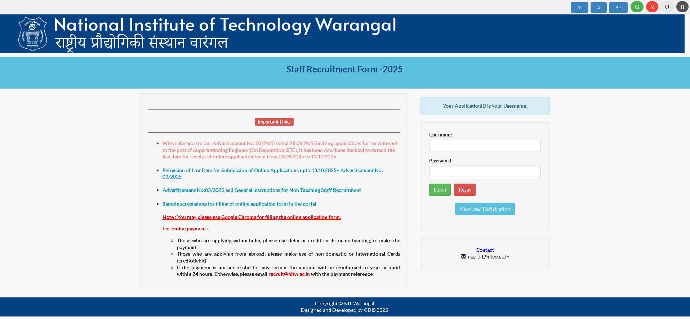

Recruitment Portal - NIT Warangal

Designed and developed a comprehensive Recruitment Portal to streamline faculty and staff recruitment processes at NIT Warangal, managing both the back-end and front-end for seamless operation.
My Responsibilities
- Spearheaded the design and development of the portal using Python (Django), PostgreSQL, HTML, and Crispy Forms, creating a robust and scalable architecture
- Built dynamic forms to capture faculty and staff applications, ensuring data validation and a user-friendly interface
- Developed secure back-end modules to process and store applicant data efficiently in PostgreSQL, enabling smooth data management
- Implemented role-based access controls and authentication mechanisms to safeguard sensitive recruitment data
- Integrated admin functionalities for HR/administrators to review, filter, and manage applications seamlessly
- Collaborated with stakeholders to understand requirements and iteratively improved the application based on feedback
- Ensured responsive UI and optimized queries for better performance and scalability
- Documented APIs, workflows, and database structures to support future enhancements and integrations
Tech Stack
- Backend: Python3, Django, Django REST Framework
- Frontend: HTML5, CSS3, JavaScript, Crispy Forms
- Database: PostgreSQL
- Authentication: Django Authentication System
- Version Control: Git, GitHub
- Deployment: AWS EC2, RDS
Key Features
- Multi-step application forms with validation
- Role-based access control for different user types
- Advanced search and filtering capabilities
- Automated email notifications
- Application status tracking
- Reporting and analytics dashboard
- Document upload and management
The portal has significantly streamlined the recruitment process at NIT Warangal, reducing manual work and providing a centralized platform for managing all recruitment activities.
I would appreciate any feedback or welcome any questions you might have. You can find my contact information on the homepage.
↑ Go to Top